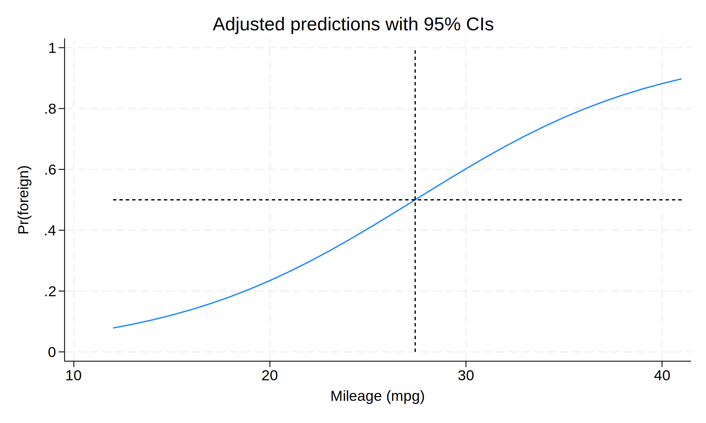

In addition to the odds ratio interpretation of coefficients in a logistic regression model, the “divide by 4” rule can also help with interpretation.
. sysuse auto (1978 automobile data) . logit foreign mpg Iteration 0: Log likelihood = -45.03321 Iteration 1: Log likelihood = -39.380959 Iteration 2: Log likelihood = -39.288802 Iteration 3: Log likelihood = -39.28864 Iteration 4: Log likelihood = -39.28864 Logistic regression Number of obs = 74 LR chi2(1) = 11.49 Prob > chi2 = 0.0007 Log likelihood = -39.28864 Pseudo R2 = 0.1276 ------------------------------------------------------------------------------ foreign | Coefficient Std. err. z P>|z| [95% conf. interval] -------------+---------------------------------------------------------------- mpg | .1597621 .0525876 3.04 0.002 .0566922 .262832 _cons | -4.378866 1.211295 -3.62 0.000 -6.752961 -2.004771 ------------------------------------------------------------------------------
The coefficient on mpg, \(.1597\), is the log odds. The
“divide by 4” rule says that the log odds divided by \(4\) (so \(.1597/4 =
.0399\)) is the maximum difference in predicted probability for a
\(1\)-unit change in mpg.
In other words, consider the following plot of predicted probabilities.
. quiet margins, at(mpg = (12(1)41)) nose . marginsplot, /// > recast(line) /// > addplot(pci .5 12 .5 41, lpattern(shortdash) lcolor(black) || /// > pci 0 `=4.378866/.1597621' 1 `=4.378866/.1597621', /// > lpattern(shortdash) lcolor(black)) /// > legend(off) Variables that uniquely identify margins: mpg

The plotted line represents the predicted probability of the outcome being
\(1\) as mpg varies. In linear regression, this would be a
straight line, and the difference in predicted probability
between mpg \(= 14\) versus mpg \(= 15\) would
be equivalent to the difference in predicted probability
between mpg \(= 30\) versus mpg \(= 31\).
However, since this is a logistic curve, the difference in predicted
probability varies over mpg, being sharpest near the middle.
Specifically, at the point when the predicted probability is exactly
\(.5\) (the dashed lines), the slope is the largest, and it recedes from
there.
This means that at that middle point (around mpg \(= 27\)),
increasing mpg by \(1\) is increasing the predicted
probability by \(.0399\). For all other places on that curve, the
increased probability when increasing mpg by \(1\) is less
than \(.0399\).